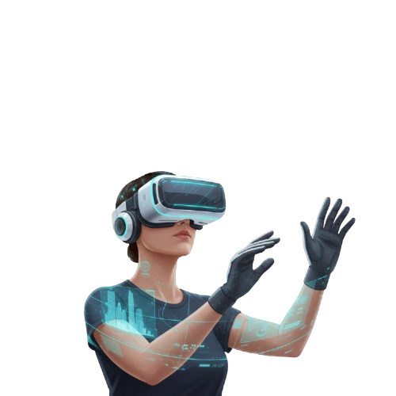

Realidad Virtual

La Realidad Virtual (RV) es una tecnología que sumerge al usuario en un entorno digital
completamente simulado, generando una experiencia inmersiva que reemplaza el mundo físico. A través
de dispositivos como gafas o cascos de RV, los usuarios pueden interactuar y "sentirse presentes" en
un escenario virtual, ya sea una fábrica, un prototipo de producto o una sala de formación. En el
contexto de la digitalización del sistema productivo, la RV es una herramienta poderosa para el
diseño, la simulación, la formación inmersiva y la visualización de datos complejos, revolucionando
cómo interactuamos con la información y los procesos.
Imagina que la pantalla de tu ordenador te
permite "ver" un mundo digital. La Realidad Virtual va un paso más allá: te permite "estar" dentro
de ese mundo. Es como si te pusieras unas gafas especiales que te transportan a un lugar
completamente diferente, que solo existe digitalmente. Cuando giras la cabeza, el mundo virtual se
mueve contigo, haciéndote creer que realmente estás allí.
En el ámbito industrial, esto significa que un ingeniero puede caminar virtualmente por una nueva
planta antes de que se construya, detectando posibles problemas de diseño o ergonomía. Un operario
puede practicar el montaje de una máquina compleja en un entorno seguro y sin riesgo, repitiéndolo
cuantas veces sea necesario hasta dominarlo. La RV nos permite experimentar y manipular objetos y
entornos digitales de una manera tan intuitiva y "real" que se convierte en una herramienta
invaluable para la planificación, el entrenamiento y la optimización de procesos productivos.
Puntos Clave
- Inmersión Total
- Interacción
- Visualización de datos
- FOormación y Simulación
- Diseñado y prototipado